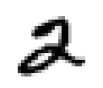
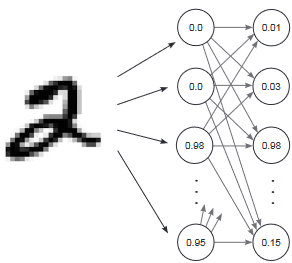

Alright, team, you survived ANNs. Give yourself a moment to breathe—seriously, inhale, exhale. Don’t
sweat it—you’re more than ready. Every line of code you’ve written, every concept you’ve grasped, has
been building up to this moment.
You’ve already shown you can handle the tough stuff, and now we’re diving deeper into some truly
exciting territory.
Today, we venture into Convolutional Neural Networks, or CNNs. Sounds fancy, right? But don’t let the name scare you. CNNs are just like ANNs, but with a bit of extra flair for images and spatial data.CNNs are the specialized tool for spotting patterns in pictures, like finding a face in a crowd or identifying your dog in a sea of Labradors.
So, take a deep breath. Today’s about embracing the challenge. It’s about pushing yourself beyond what you know and unlocking even more powerful tools in your AI toolkit. Just like any skill, it’s all about persistence, practice, and a little bit of patience.
Remember, none of this is about perfection—it’s about progress. You might not get it all in one go, and that’s okay. The magic happens when you keep pushing through, even when things feel tough. By the end of today, you’ll have a clearer understanding of one of the coolest aspects of AI. And trust me, you’ll feel pretty awesome once it clicks.
Let’s keep building. Let’s keep learning. The finish line’s just ahead, and I know you’ve got what it takes to get there. Ready to take on CNNs? Let’s do this!
Alright, so we’ve learned about Artificial Neural Networks (ANNs). Now we’re throwing Convolutional
Neural Networks (CNNs) into the mix. But why? Can’t ANNs handle images just as well as CNNs?
Yes, ANNs Can Do What CNNs Do
Here’s the thing: ANNs
can work with images. Technically, they can do everything CNNs do. But here’s the kicker—they’re not
built for it. Using ANNs for images
is like trying to cut a tree with a butter knife. Sure, you can do it, but it’s slow, messy, and just
plain inefficient. CNNs, on the other hand, are like chainsaws—designed for the job and far more
efficient.
But let's first understand,
What’s an Image?
Let’s pause and understand what an image really is.
Grayscale Images: The Simplest Case
A grayscale image is essentially a 2D grid of pixels, where each pixel represents a single intensity
value:
Each pixel is represented by a number between 0 and 255
- 0 represents black
- 255 represents white
Values in between represent different shades of gray.
For example, a 28x28 grayscale image (like those in MNIST, the dataset name we'll be using) is
represented as a matrix:
# Example of how a 28x28 grayscale image is stored
image = [
[0, 12, 45, ..., 128],
[23, 56, 78, ..., 156],
...
[34, 67, 89, ..., 192]
] # 28 rows × 28 columns
When we load such an image into our neural network, we're essentially
feeding it 784 numbers (28 × 28 = 784), each representing the brightness of one pixel.
RGB Images: Adding Color
Color images are more complex (not really) because they use three channels: Red, Green, and Blue (RGB):
- Each pixel has three values instead of one
- Each value still ranges from 0 to 25.
- The combination of these values creates different colors
[255, 0, 0] is pure red
[0, 255, 0] is pure green
[0, 0, 255] is pure blue
[255, 255, 255] is white
[0, 0, 0] is black
# Example of how a small RGB image might be represented
rgb_image = [
# Red channel
[[255, 0, 0], # Red pixel
[128, 0, 0], # Darker red pixel
...],
# Next row
[[255, 128, 0], # Orange pixel
[0, 255, 0], # Green pixel
...],
# And so on...
]For a 224x224 RGB image:
Each channel is 224×224 pixels
Total dimensions are 224×224×3
Total number of values: 150,528 (224 × 224 × 3)
Play with it here.
Proving ANNs Work on Images (But Why They Don’t Scale)
Let’s take the Modified National Institute of Standards and Technology (MNIST) dataset as an
example. It consists of digits that high school students and employees of the US Census Bureau handwrote
some years ago. The interesting
bit is that these handwritten digits are black-and-white (grayscale) images of people’s handwriting.
Accompanying each digit image is the actual number they were writing (0–9). For the last few decades,
people have been using this dataset
to train neural networks to read human handwriting, and today, you’re going to do the same. It is in a
28x28 format, which means 784 pixels per image.

Each MNIST image has 784 pixels arranged in a 28 × 28 grid. Now, to feed this image into an Artificial Neural Network (ANN), we flatten it into a single row of 784 values. Imagine unrolling the image into one long list—simple, right?

Since MNIST is about recognizing digits, we have 10 possible labels (0 to 9). Our goal is to make
the ANN predict 10 probabilities, one for each digit. For example, if the network sees the image
of a 2, it should output
something like [0.01, 0.02, 0.95, 0.01, ...], where the highest probability (0.95) corresponds to the
digit 2.
To achieve this, we design a neural network with:
- 784 input nodes, one for each pixel in the image.
- 10 output nodes, one for each possible digit (0 to 9).
In between, we can have hidden layers to learn complex patterns, but the key idea is that the input size
reflects the number of pixels, and the output size matches the number of digit labels.
How Do We Flatten the Images?
Images are 2D grids, but neural networks expect a 1D list of values. So, we flatten
the grid:
- Take the first row of the 28 × 28 grid,
- Place it in a list,
- Add the second row, the third row, and so on, until all rows are concatenated into a single vector
of 784 numbers.
import sys, numpy as np
from keras.datasets import mnist #pip install keras
# Load the MNIST dataset (handwritten digits)
(x_train, y_train), (x_test, y_test) = mnist.load_data() #we break the dataset in 2 sets, train(the one we train), and test(we test how well our model has learnt)
# Preprocess the training images: take the first 1000 images, flatten them (28x28 -> 784) and normalize pixel values to range [0, 1] by dividing by 255
images, labels = (x_train[0:1000].reshape(1000, 28*28) / 255, y_train[0:1000])
# Initialize a matrix of zeros for one-hot encoding the labels
one_hot_labels = np.zeros((len(labels), 10)) # [0, 0, 0, 0, 0, 0, 0, 0, 0, 0]
# Convert labels (0-9) into one-hot encoded format
for i, l in enumerate(labels):
one_hot_labels[i][l] = 1
labels = one_hot_labels # Replace labels with one-hot encoded labels, so label 3 -> [0, 0, 0, 1, 0, 0, 0, 0, 0, 0]
# Preprocess test images: flatten them and normalize pixel values
test_images = x_test.reshape(len(x_test), 28*28) / 255 #normalize the pixels to be between 0-1.
# One-hot encode test labels
test_labels = np.zeros((len(y_test), 10))
for i, l in enumerate(y_test):
test_labels[i][l] = 1 #same for test
# Set a random seed for reproducibility
np.random.seed(1) #you can skip if you want
# Define the ReLU (Rectified Linear Unit) activation function
relu = lambda x: (x >= 0) * x # Returns x if x > 0, else returns 0 (fancy way to write a function)
# Derivative of ReLU: 1 if x > 0, else 0
relu2deriv = lambda x: x >= 0
# Set hyperparameters
lr = 0.005 # Learning rate
iterations = 350 # Number of training iterations
hidden_size = 40 # Number of nodes in the hidden layer (layer 1)
pixels_per_image = 784 # Number of input nodes (28x28 pixels)
num_labels = 10 # Number of output nodes (one per digit 0-9)
# Initialize weights for input-to-hidden and hidden-to-output layers
weights_0_1 = 0.2 * np.random.random((pixels_per_image, hidden_size)) - 0.1 #random weights layer 0
weights_1_2 = 0.2 * np.random.random((hidden_size, num_labels)) - 0.1 #random weights for layer 1
# Begin training loop, we'll follow SDG
for j in range(iterations):
error, correct_cnt = (0.0, 0) # Initialize total error and correct predictions
# Loop through each training example
for i in range(len(images)):
# Forward pass
layer_0 = images[i:i+1] # Input layer (single image)
layer_1 = relu(np.dot(layer_0, weights_0_1)) # Hidden layer (apply ReLU)
layer_2 = np.dot(layer_1, weights_1_2) # Output layer
# Calculate total error (squared difference between prediction and true label)
error += np.sum((labels[i:i+1] - layer_2) ** 2) #MSE
# Check if the network's prediction matches the true label
correct_cnt += int(np.argmax(layer_2) == np.argmax(labels[i:i+1]))
# Backpropagation: Calculate direction_and_amount (errors at each layer)
layer_2_direction_and_amount = (labels[i:i+1] - layer_2) # Error at output layer
layer_1_direction_and_amount = layer_2_direction_and_amount.dot(weights_1_2.T) * relu2deriv(layer_1) # Error at hidden layer
# Update weights using gradients and learning rate
weights_1_2 += lr* layer_1.T.dot(layer_2_direction_and_amount) # Update hidden-to-output weights (we transpose so we can multiply the matrix)
weights_0_1 += lr * layer_0.T.dot(layer_1_direction_and_amount) # Update input-to-hidden weights
# Print training progress (iteration number, average error, and accuracy)
sys.stdout.write("\r" +
" I:" + str(j) +
" Error:" + str(error / float(len(images)))[0:5] +
" Correct:" + str(correct_cnt / float(len(images))))
I:349 Error:0.108 Correct:1.0Seems pretty good, ain't it? I guess, after all, we don't need CNNs— wait let me show you something. Let's predict.
if (j % 10 == 0 or j == iterations - 1): # Run the test evaluation every 10 iterations or at the final iteration
error, correct_cnt = (0.0, 0) # Reset test error and correct count for this evaluation
for i in range(len(test_images)): # Loop through all test examples
layer_0 = test_images[i:i + 1] # Input layer: a single test image (shape: 1 × 784)
layer_1 = relu(np.dot(layer_0, weights_0_1)) # Hidden layer: apply ReLU activation
layer_2 = np.dot(layer_1, weights_1_2) # Output layer: calculate predictions
# Compute error (squared difference between true label and predicted output)
error += np.sum((test_labels[i:i + 1] - layer_2) ** 2)
# Check if the predicted label matches the true label
correct_cnt += int(np.argmax(layer_2) == np.argmax(test_labels[i:i + 1]))
# Print the test error and accuracy
sys.stdout.write(" Test-Err:" + str(error / float(len(test_images)))[0:5] + \
" Test-Acc:" + str(correct_cnt / float(len(test_images))))
print() # Move to the next line for readability
Test-Err:0.653 Test-Acc:0.7073EW! That's pretty horrible! The network’s poor test accuracy (70.7%) compared to its perfect training accuracy (100%) highlights a critical issue: overfitting. Overfitting occurs when a model memorizes the training data instead of learning general patterns. Like how y'all cram instead of learning before an exam. And how you get stumbled when you see unseen questions. Same way, it struggles with unseen test data. Let’s break down why this happens and why we don’t typically use ANNs for image datasets.
But that's not all. It has other problems!
The Problem with ANNs for Images
1. Inefficiency: Every pixel in an image is treated as an independent input in an ANN, which
forces the network to manually learn relationships between all 784 pixels for something like MNIST.
That’s manageable for small grayscale
images, but as soon as we scale to larger images—say, a 1080x1920 HD image—it becomes a computational
nightmare.
Now, throw in RGB channels (3 layers of color information), and let’s say we use 500 neurons in just
one hidden layer. The number of weights the network has to train skyrockets to 1080 x 1920 x 3 x 500
= 3,110,400,000 (that’s 3.1
billion!). And that’s with just one hidden layer. If we add more layers, the number of weights
grows exponentially. Training such a network becomes nearly impossible. It’s like trying to fit an
elephant into a shoebox.
2. Overfitting: It happens when a neural network learns not only the patterns in the training
data but also the noise and specific details that don’t generalize to new, unseen data. Essentially, the
model becomes too specialized
to the training dataset, and it starts to "memorize" rather than truly learn.
In our case, look at the test accuracy we achieved earlier—70.7%—which was a huge drop from
the perfect accuracy on the training set. This is a classic sign of overfitting. The model learned the
details of the training data so well
that it couldn't adapt to new, unseen examples from the test set.
To put it simply, the model was so good at predicting the training data that it forgot how to handle
the real world scenarios it hadn’t seen before. Overfitting happens when the model is too complex
for the amount of data it's trained
on, and it ends up memorizing the data, making it great for training but poor for generalization.:
3. No Spatial Awareness: One of the main limitations of ANNs is that they don’t have a
built-in understanding of the spatial relationships within an image. In simpler terms, ANNs treat each
pixel as a separate, independent entity.
They don’t have any way to recognize that some pixels are close to each other in space and should be
related.
For example, consider an image of a face. The pixel at the top-left corner could be a part of the
background, while the pixel at the bottom-right corner might be part of the eye or mouth. In an ANN,
these two pixels are treated as equally
important and unrelated, despite the fact that the proximity of certain pixels (like the nose and eyes)
carries critical information about the structure of the face. ANNs can't naturally capture this spatial
relationship, making it challenging
to understand complex images where location matters.
This lack of spatial awareness becomes a problem when the images are more complex, as the model
struggles to capture key patterns like the distance between facial features or other elements that rely
on spatial positioning.
So, is this the end? Can't handle images? Well, fortunately some smart guys created the concept
CNNs, and we'll study it in the next blog.
CONGRATULATIONS!!!
You have just completed Day 9. Now do re-read the whole thing again. Until you can understand every concept. Take a pen and paper; and make notes. Revise. And remember, nothing is tough. You just need to have the hunger for knowledge.